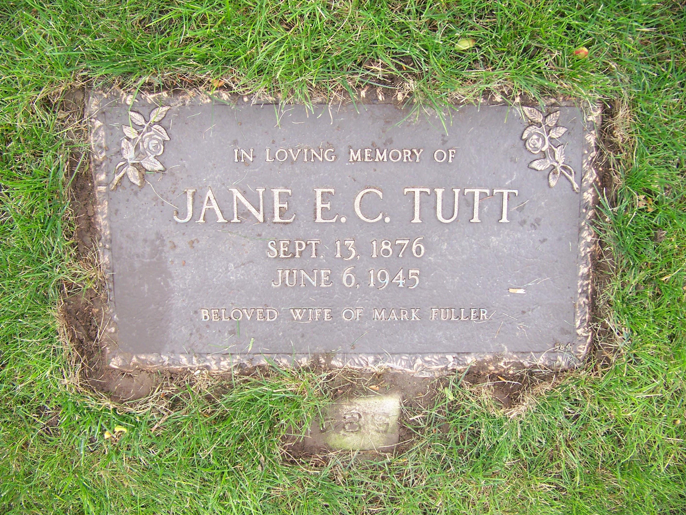
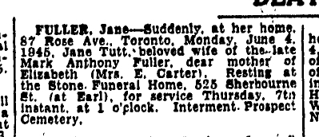
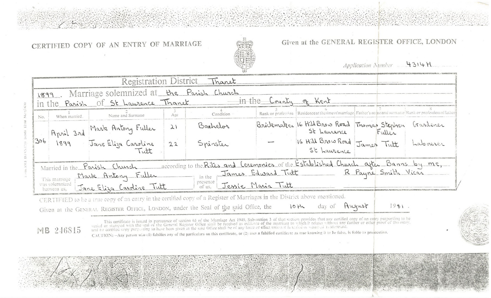
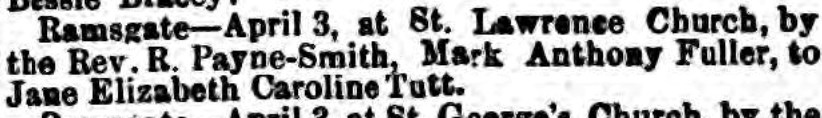
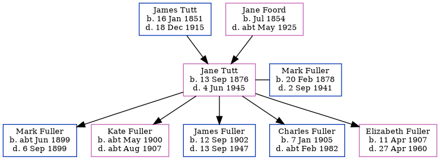

Jane Eliza Caroline Fuller (née Tutt) 1876 - 1945
[ Home ] | [ Calendar ] | [ Surnames Index ] | [ Family History ]A general servant and the daughter of James Tutt (a general laborer) and Jane Foord (a general shop), Jane Tutt, the first cousin twice-removed on the father's side of <a href="I1.html">Nigel Horne</a>, was born in Margate, Kent, England on Sep 13, 1876<span class="citation">1,2</span> and married Mark Fuller (a general laborer with whom she had 5 children: <a href="I3426.html">Mark Anthony</a>, <a href="I1333.html">Kate Rosaline</a>, <a href="I1322.html">James Richard Edmund</a>, <a href="I1323.html">Charles Thomas</a> and <a href="I1312.html">Elizabeth Rebecca</a>) in St Lawrence, Thanet, Kent, England on Apr 3, 1899<span class="citation">2</span>.</p><p>Throughout her life, Jane lived in several places: at 18 Clarence Terrace, St Lawrence in Thanet on Apr 3, 1881<span class="citation">3</span>; on Clarence Road, St Lawrence in Thanet on Apr 5, 1891<span class="citation">4</span>; on 22 Central Road, Ramsgate, Kent on Apr 2, 1911<span class="citation">5</span>; and on 3 Central Road, Ramsgate, Kent on Jun 19, 1921<span class="citation">6</span>. <p>She died on Jun 4, 1945 at 87 Rose Avenue, Toronto, Ontario, Canada and was buried at Prospect Cemetery, Toronto on Jun 7, 1945.
Parents
- James was born on Jan 16, 1851
- Jane was born in Jul 1854
Children
- Mark Anthony was born c. Jun 1899
- Kate Rosaline was born c. May 1900
- James Richard Edmund was born on Sep 12, 1902
- Charles Thomas was born on Jan 7, 1905
- Elizabeth Rebecca was born on Apr 11, 1907
Citations
- England & Wales births 1837-2006 - Findmypast
- Kent, Canterbury Archdeaconry Marriages - Findmypast
- 1881 England, Wales & Scotland Census - Findmypast (was age 4 and the daughter of the head of the household)
- 1891 England, Wales & Scotland Census - Findmypast (was age 15 and the daughter of the head of the household)
- 1911 Census for England & Wales - Findmypast (was age 35 and the wife of the head of the household)
- 1921 Census Of England & Wales - Findmypast (was age 45 and the wife of the head of the household)
Media
Jane Eliza Caroline Tutt - grave

Jane Tutt - obituary

Mark Fuller - Jane Tutt - marriage

Thanet Advertiser April 8, 1899

Kent, Canterbury Archdeaconry marriages 1538-1928 - GBPRS/CANT/M/97022325/2
England Marriages 1538-1973 - R_848395557/2
England & Wales marriages 1837-2008 - BMD/M/1899/2/AZ/000391/189
England & Wales births 1837-2006 - BMD/B/1876/4/AZ/000561/208
1891 England, Wales & Scotland Census - GBC/1891/0005906042
1911 Census for England & Wales - GBC/1911/RG14/04529/0509/5
1911 Census for England & Wales - GBC/1911/RG14/04529/0509/1
Passenger Lists leaving UK 1890-1960 Image - TNA-BT27-1078-00-0087-P-0005F
1901 England, Wales & Scotland Census - GBC/1901/0007457504
Family Tree
Generated by Ged2Site. Last updated on Jul 20, 2025